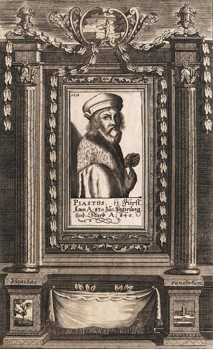
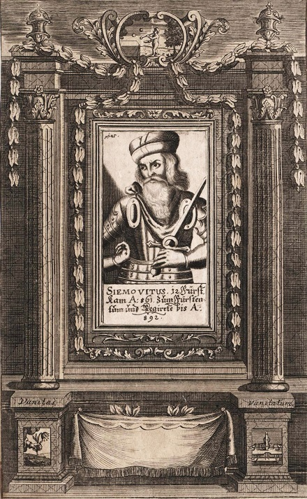
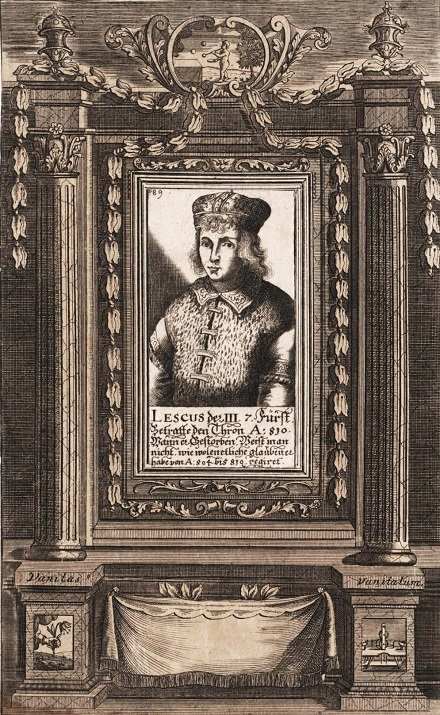
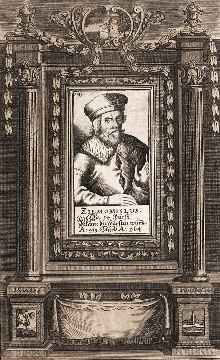
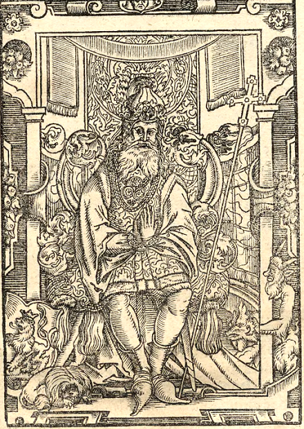
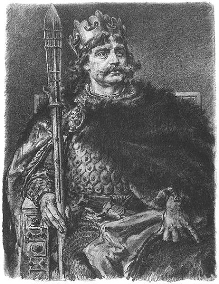
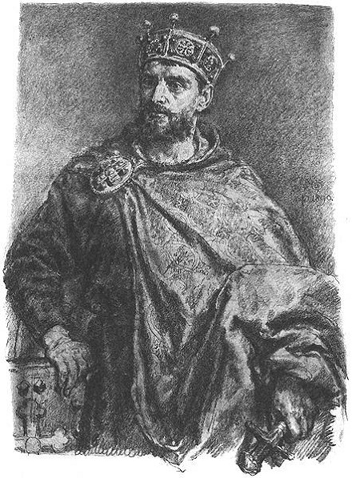

Chościsko
Chościsko – według Galla Anonima ojciec Piasta, protoplasty dynastii Piastów. Jego imię oznaczające prawdopodobnie ogon (od chost/chwost) pojawia się w Kronice polskiej w tym znaczeniu dwukrotnie:
-
na początku opowieści o Piaście: łac. Pazt filius Chossistconis (Piast, syn Chościska)
-
w pierwszym zdaniu następnego rozdziału: łac. Semovith filius Pazt Chossistconis (Siemowit, syn Piasta Chościskowica).
Chościskiem nazwany jest także książę Popiel w tytule rozdziału pierwszego księgi pierwszej. Możliwe, że imienia użyto tu w roli przydomka lub że zostało ono dodane do rękopisu w okresie późniejszym. Druga teoria wydaje się bardziej prawdopodobna, ponieważ oryginalna, łacińska forma zdania O księciu Popielu zwany Chościsko jest niepoprawna gramatycznie.
Piast

Piast Chościskowic (łac. Past Ckosisconis, Pazt filius Chosisconisu, także Piast Kołodziej, Piast Oracz) – legendarny protoplasta dynastii Piastów; ojciec Siemowita, mąż Rzepichy.
Według Galla Anonima był synem Chościska i ubogim oraczem spod Gniezna. Miał żonę Rzepichę i syna Siemowita.
Nieznajomi postrzygli syna Piasta i nadali mu imię Siemowit. Według kronikarza tenże Siemowit urósł w zacności do tego stopnia, iż „król królów i książę książąt za powszechną zgodą ustanowił go księciem Polski, a Popiela wraz z potomstwem doszczętnie usunął z królestwa.
Siemowit

Siemowit (Ziemowit) – książę Polan z IX wieku znany jedynie z kroniki Galla Anonima. Według jego relacji Siemowit był synem Piasta i Rzepichy i objął władzę po obaleniu Popiela, zgodnie z wolą zgromadzonych na wiecu współplemieńców. Synem i następcą Siemowita był Lestek.
Kwestia historyczności Siemowita początkowo nie budziła wątpliwości, została zakwestionowana pod koniec XIX wieku. Od lat 60. XX wieku badacze raczej skłaniają się do uznania przekazanej przez Galla listy przodków Mieszka I, gdzie figuruje m.in. Siemowit, za autentyczną. Znacznie więcej zastrzeżeń co do autentyczności dotyczy informacji o rodzicach Siemowita.
Wśród badaczy wierzących w autentyczność tej postaci utrzymuje się, że lata życia Siemowita hipotetycznie powinny przypadać na okres od 845 do 900, chociaż istnieje możliwość, że ewentualny błąd tych ustaleń może wynosić nawet kilkadziesiąt lat. Natomiast objęcie władzy na pewno nastąpiło w drugiej połowie IX wieku. Nie jest znane miejsce jego pochówku.
Lestek

Lestek, Leszek, niepoprawnie (forma zlatynizowana) Lestko – drugi książę Polan z dynastii Piastów, o którym wspomina Gall Anonim w swej kronice. Syn Siemowita i ojciec Siemomysła.
Geneza jego imienia nie jest znana. Wywodzi się je od słowa lście (chytrość). Przypuszcza się, że jest zdrobnieniem jakiejś nieznanej, dwuczłonowej, słowiańskiej nazwy osobowej Lścimir bądź Lścisław. Pierwotnie brzmiało prawdopodobnie Lścik. Imię to występuje w rozmaitych wariantach, z których z czasem wybija się dominująca – Leszek.
Lestek miał być synem i następcą Siemowita, a ojcem i poprzednikiem Siemomysła. Po jego, tj. Siemowita zgonie na jego miejsce wstąpił syn jego Lestek, który czynami rycerskimi dorównał ojcu w zacności i odwadze. Po śmierci Lestka nastąpił Siemomysł, jego syn.
Początkowo nikt nie wątpił w historyczność Piastów „przedmieszkowych”. W drugiej połowie XIX wieku zaczęto kwestionować ich istnienie. Bogatą dyskusję rozstrzygnął w zasadzie artykuł Henryka Łowmiańskiego Dynastia Piastów we wczesnym średniowieczu, w którym obronił wiarygodność przekazu Galla Anonima, a tym samym i „historyczność” przynajmniej trzech bezpośrednich poprzedników Mieszka.
Nie zachowały się żadne wiarygodne dane na temat dat panowania Lestka. Przyjmuje się hipotetycznie, że urodził się około 870–880, a objął rządy około 900–910. Większość literatury przyjmuje, że zmarł przypuszczalnie w latach 930–940.
Siemiomysł

Siemomysł (Ziemomysł) (ur. prawdopodobnie na przełomie IX i X wieku, zm. w latach 950–960) – trzeci książę Polan z dynastii Piastów wspomniany w Kronice polskiej Galla Anonima. Wnuk Siemowita, syn Lestka, ojciec Mieszka I.
Historyczność Siemomysła, jak i pozostałych przodków Mieszka I znanych jedynie z relacji Anonima zwanego Gallem, budzi dyskusje w literaturze przedmiotu; obecnie większość badaczy uznaje go za postać rzeczywiście istniejącą.
Starsza literatura określała go mianem Ziemomysł. Obecnie przyjmuje się, że ojciec Mieszka I poprawnie winien być zwany Siemomysłem.
Wobec niemożliwości potwierdzenia jego istnienia w innych źródłach jest uważany za postać, której istnienie nie jest historycznie udowodnione. Panował hipotetycznie od ok. 930 roku (niektórzy badacze sugerują, że panowanie Siemomysła było dość krótkie i rozpoczęło się ok. 950 roku). Przypuszcza się, że zjednoczył najprawdopodobniej ziemie Polan, Goplan i Mazowszan, chociaż nie można wykluczyć, że uczynił to już jego ojciec. Według hipotezy Henryka Łowmiańskiego w 954 roku wsparł powstanie plemienia Wkrzan przeciwko Niemcom. Nie jest znane miejsce jego pochówku.
Żona (żony) Siemomysła nie jest znana. Pojawił się domysł, że mogła być córką Włodzisława, księcia Lędzian żyjącego w 944 roku. Tego domysłu z braku źródeł nie można zweryfikować.
Mieszko I

Mieszko I (ur. 922–945, zm. 25 maja 992) – książę Polski z dynastii Piastów sprawujący władzę od ok. 960 roku. Syn Siemomysła, wnuk Lestka. Ojciec Bolesława I Chrobrego, Świętosławy-Sygrydy, Mieszka, Lamberta i Świętopełka. Brat Czcibora. Po kądzieli dziadek Knuta Wielkiego.
Mieszko I
to historyczny pierwszy władca Polan, uważany zarazem za faktycznego twórcę państwowości polskiej.
Kontynuował politykę swojego ojca i dziadka, którzy jako władcy pogańskiego księstwa znajdującego się na terenach obecnej Wielkopolski, poprzez sojusze lub siłę militarną podporządkowali sobie Kujawy oraz prawdopodobnie Pomorze Wschodnie i Mazowsze. Przez większość okresu swojego panowania toczył walki o Pomorze Zachodnie, zajmując je po rzekę Odrę. W ostatnich latach życia przystąpił także do wojny z Czechami, zdobywając Śląsk i prawdopodobnie Małopolskę.
Poprzez ślub w 965 roku z Dobrawą Przemyślidką i przyjęcie chrztu w 966 roku Mieszko włączył swoje państwo w zachodni krąg kultury chrześcijańskiej. Oprócz podbojów duże znaczenie dla przyszłości księstwa Polan miały także jego reformy wewnętrzne, mające na celu rozbudowę i usprawnienie państwa.
Zachowane źródła pozwalają twierdzić, że Mieszko I był sprawnym politykiem, utalentowanym wodzem i charyzmatycznym władcą. Prowadził zręczne działania dyplomatyczne, zawierając sojusz wpierw z Czechami, a następnie ze Szwecją i Cesarstwem. W polityce zagranicznej kierował się przede wszystkim racją stanu, wchodząc w układy nawet ze swoimi wcześniejszymi wrogami. Synom pozostawił państwo o znacznie wyższej pozycji w Europie i przynajmniej podwojonym terytorium.
Bolesław I Chrobry

Bolesław I Chrobry (Wielki) (ur. 967, zm. 17 czerwca 1025) – władca Polski z dynastii Piastów, pierwszy koronowany król Polski (od 1025), w latach 1003–1004 także książę Czech jako Bolesław IV, książę Polski od 992.
Był synem Mieszka I, księcia Polski i Dobrawy, czeskiej księżniczki. Objął rządy w 992, wypędzając krótko potem swoją macochę Odę i przyrodnich braci.
Popierał misje Wojciecha Sławnikowica, biskupa praskiego i Brunona z Kwerfurtu. Męczeńską śmierć tego pierwszego (997) i jego rychłą kanonizację wykorzystał niejako do celów politycznych, doprowadzając na tzw. zjeździe gnieźnieńskim do utworzenia polskiej metropolii kościelnej w Gnieźnie oraz biskupstw w Krakowie, Wrocławiu i Kołobrzegu i tym samym potwierdzenia pełnej samodzielności Polski przez cesarza Ottona III. Po śmierci Ottona III (1002) Bolesław znalazł się w konflikcie z jego następcą Henrykiem II Świętym, prowadząc z nim długotrwałe wojny (1002–1018), zakończone pokojem w Budziszynie i zajęciem Milska i Łużyc.
W 1018 zdobył Kijów, osadzając na ruskim tronie swojego zięcia Światopełka I. W 1018 lub rok później przyłączył ponownie do państwa polskiego utracone w 981 roku Grody Czerwieńskie. Tuż przed śmiercią (1025), koronował się na pierwszego króla Polski.
Mieszko II Lambert

Mieszko II Lambert (ur. 990, zm. 10 lub 11 maja 1034) – król Polski w latach 1025–1031, książę Polski 1032–1034 z dynastii Piastów, drugi syn Bolesława I Chrobrego, a pierwszy z małżeństwa z Emnildą, księżniczką słowiańską. Przejął władzę po śmierci ojca i prawdopodobnie wypędził z kraju swoich dwóch braci.
Zorganizował dwa niszczycielskie najazdy na Saksonię w 1028 i 1030. Następnie prowadził wojny obronne przeciw Niemcom, Czechom i książętom Rusi Kijowskiej. Opuścił kraj w 1031 w wyniku kolejnej wyprawy Konrada II na ziemie polskie, oraz po ataku książąt ruskich Jarosława Mądrego i Mścisława, którzy pomogli na polskim tronie osadzić jego brata Bezpryma. Następnie uszedł do Czech, gdzie został uwięziony przez księcia Udalryka.
Odzyskał władzę w 1032 jako książę jednej z trzech dzielnic. Zjednoczył państwo, ale nie udało mu się odtworzyć stabilnych struktur władzy. Za jego czasów od Polski odpadły nabytki terytorialne Bolesława Chrobrego: Milsko i Łużyce, Grody Czerwieńskie oraz Morawy (i być może Słowacja). Był pierwszym władcą Polski umiejącym czytać i pisać.
Mieszko II już za życia ojca był aktywny politycznie, co pozwala twierdzić, że Bolesław Chrobry wyznaczył go na swojego następcę. Uczestniczył przede wszystkim w polityce niemieckiej, zarówno jako przedstawiciel Chrobrego, poseł, jak i dowódca wojsk. W 1013 najprawdopodobniej wraz z ojcem przybył do Merseburga i był obecny podczas zawierania porozumienia między Bolesławem Chrobrym a Henrykiem II, na mocy którego Bolesław uzyskał Milsko i Łużyce w lenno, a w zamian zobowiązał się do posiłkowania Henrykowi II podczas wyprawy do Italii.